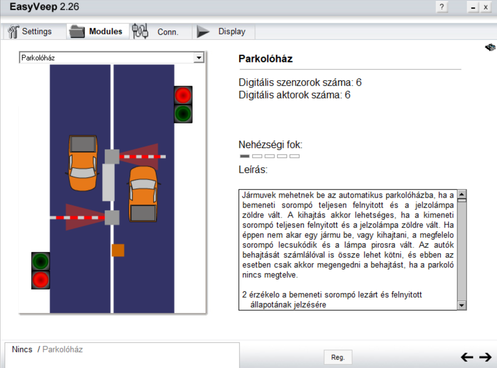
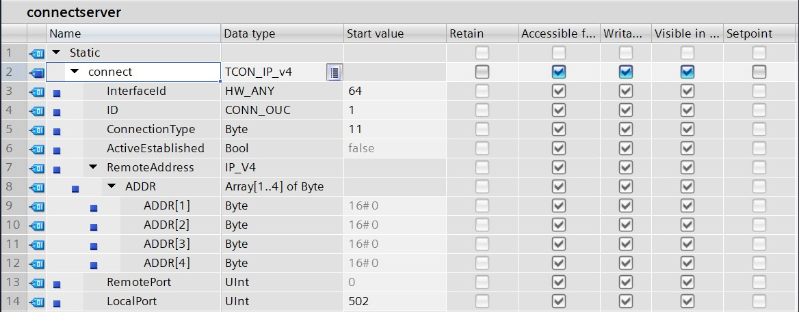
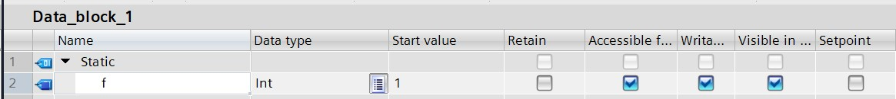
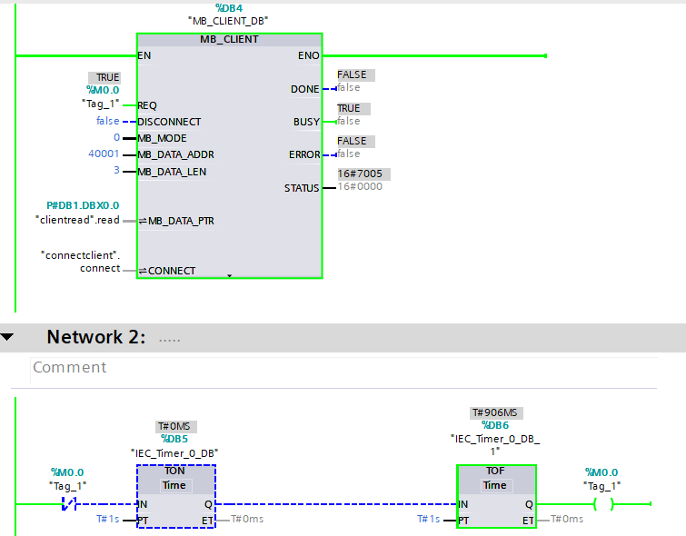
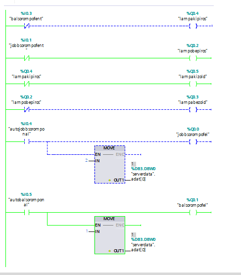

Tantárgy Ismertetése
Ezt a tantárgyat 13.-ban kezdtük el tanulni. A tanórák elején sokat írtunk a füzetbe a különböző kommnuikációs formákról (RS235,Modbusz,Profibusz,Profinet) majd később gyakorlati formában is kipróbáltuk PLC - PLC, PLC - Mikrovezérlő, PLC - HMI kapcsolásokat.
Projekt
Feladat Leírás
Ebben a feladatban egy parkolóház sorompóinak a vezérlését kell leprogramozni, amiben ha a jobb sorompó kinyílik, akkor pozitív irányba működtet egy pneumatikus dugattyút majd amikor a bal sorompó kinyílik, akkor negatív irányba működtet egy pneumatikus dugattyút.
Videó a Működésről
Alap Feladat Leírása
EasyVeep nevű program egyik gyakorló feladata a Parkolóház, ezt a feladatot egészítjük ki később pneumatikus vezérléssel, illetve modbusz kommunikációval.

Modbusz Kommunikáció
A kommunikáció megvalósítása a kettő PLC között a Pneumatikus henger működtetéséhez.
A kettő PLC között Modbusz TCP kommunikácót használtam
Az alábbi képeken látható hogy a szerver illetve a kliens PLC-ben milyen fb-ket paramétereztünk. A PLC-k egy helyi hálózaton kapcsoltuk össze egy switch segítségével. A TIA PORTAL-al egy wifi router segítségével kapcsolódtam a PLC hálózathoz.
Szerver PLC-nek a beállításai/Programja

Kliens PLC-nek a beállításai/Programja
A kliens PLC kezdeményezi a kommunikációt erre egy órajelre lesz szükség, ami a 2. Networkben látható.
A connect paraméter beállításai a kliens PLC-hez

A változó az állapotgéphez

Modbusz által használ értékek


Parkolóház alapkód
Az EasyVeep-ben megadott feladat programja létra nyelvben.
Ebbe a kódba kellett
beleépítenem a pneumatikus munkahenger vezérlését

A Pneumatikus Henger Vezérlésének Kódja